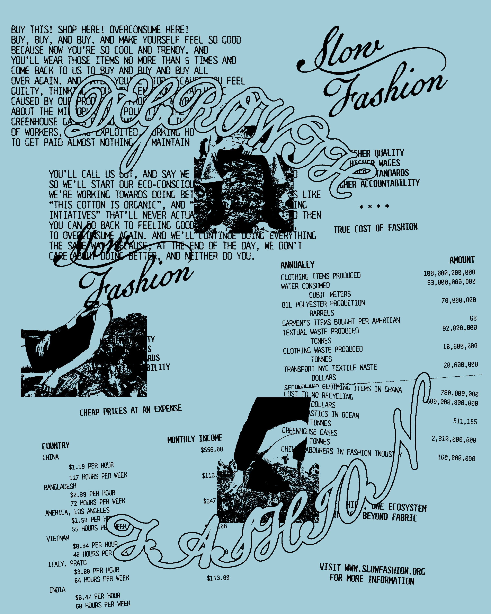

A poster design promoting a conceptual social campaign calling for the degrowth of fashion. Uses receipt imagery to show statistics about fast fashion, from amount of waste created to the wages of garment workers. Inspiration taken from 80s punk flyers
A frame animation accompanies the poster. Combining frames from fast fashion ads and images of clothing dumps in Ghana, pollution in water, garment workers, and protests. Each frame done by hand and combined using Adobe Premiere Pro. Music is Manic Man (Instrumental) by Curtis Waters.
Slow Fashion,
Core 2: Typography
Digital Poster
Mixed Media Frame Animation
2024
Core 2: Typography
Digital Poster
Mixed Media Frame Animation
2024
